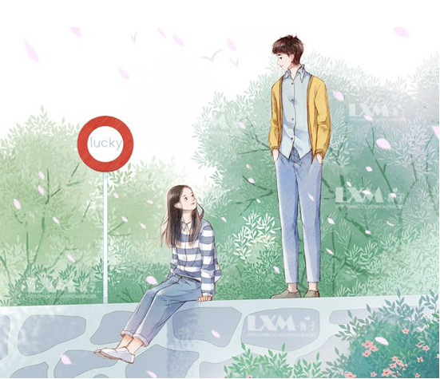

<ion-header>
  <ion-toolbar class="toolbar">
    <ion-buttons slot="start">
      <ion-back-button mode="md" class="back"></ion-back-button>
    </ion-buttons>
  </ion-toolbar>
</ion-header>

<ion-content fullscreen="true" class="app-content">
<div class="review">
    <div id="question-1" [class.hide]="current != 0">
      <h2 style="margin-top: 100px;">关于这次调查的问题说明</h2>
      <p style="margin-bottom: 100px;">1、本次调查是由XXX组织的全国公益性调查 <br>2、此次调查结果不会用于商用 <br>3、我们将对调查结果完全保密</p>
      <ion-button expand="block" class="btn" (click)="selectedStep(1)">我已了解，开始评测</ion-button>
    </div>
    <div id="question-2" [class.hide]="current != 1" [class.selected]="current == 1">
        <p style="margin-top: 100px;" class="progress-num">{{current}}/<span>{{total}}</span></p>
        <ion-progress-bar value="0.1" class="progress-bar"></ion-progress-bar>
        <h1>1、你现在是否有不孕不育相关的问题？</h1>
        <ion-item lines="none" style="margin-bottom: 100px; color: #5B5060;">
            <ion-label><input type="radio"> 有 </ion-label>
            <ion-label><input type="radio"> 没有</ion-label>
        </ion-item>
        <ion-button expand="block" class="btn" (click)="selectedStep(2)">下一题</ion-button>
    </div>
    <div id="question-3" [class.hide]="current != 2" [class.selected]="current == 2">
        <p style="margin-top: 100px;" class="progress-num">{{current}}/<span>{{total}}</span></p>
        <ion-progress-bar value="0.1" class="progress-bar"></ion-progress-bar>
        <h1>2、你是否做过妇科B超检查妇科B超检查？<span (click)="showBichao()">(<ion-icon name="alert" class="icon-tip"></ion-icon> 什么是B超检查)</span></h1>
        <ion-item lines="none" style="color: #5B5060;">
            <ion-label><input type="checkbox"> 方法一 </ion-label>
        </ion-item>
        <ion-item lines="none" style="color: #5B5060;">
            <ion-label><input type="checkbox"> 方法二 </ion-label>
        </ion-item>
        <ion-item lines="none" style="margin-bottom: 100px; color: #5B5060;">
            <ion-label><input type="checkbox"> 方法三 </ion-label>
        </ion-item>
        <ion-button expand="block" class="btn" (click)="selectedStep(3)">下一题</ion-button>
    </div>
    <div id="question-4" [class.hide]="current != 3" [class.selected]="current == 3">
        <div class="thanks"></div>
        <h2 class="end-h">感谢您的支持，已经完成测评</h2>
        <p class="end-t">以上测评结果不会公开，我们将对结果保密</p>
        <ion-button expand="block" class="btn" (click)="goHome()">回到首页</ion-button>
    </div>
</div>
</ion-content>
